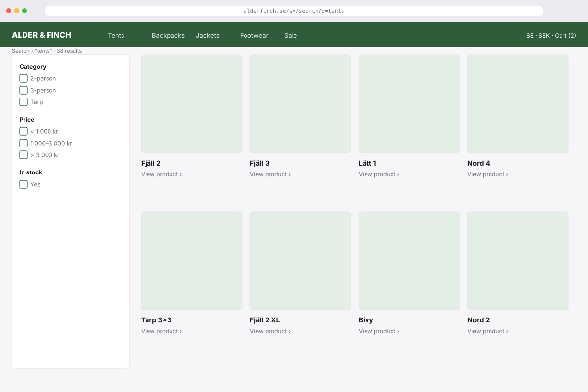
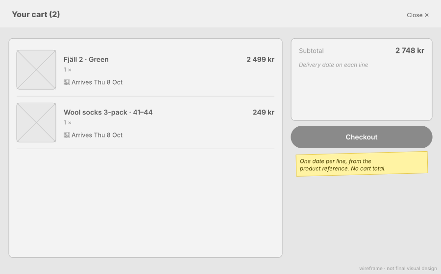

Product page ↩ 5.3 in the plan
Three operations: gql:product-page fills the hero, price and stock from the edge; gql:product-promise fills the delivery line a moment later; gql:product-reviews fills the reviews on scroll.
On: Look at a productAdd to cart
Search results
Tiles from gql:search-results. A tile is an image and a name; price and stock are on the product page.
On: Search and scroll

Facets Result tilesMini cart ↩ 5.4 in the plan
Slides in after add-to-cart or from the header. Each line shows its promise.
On: Add to cartOpen the mini cart

Lines Summary Checkout